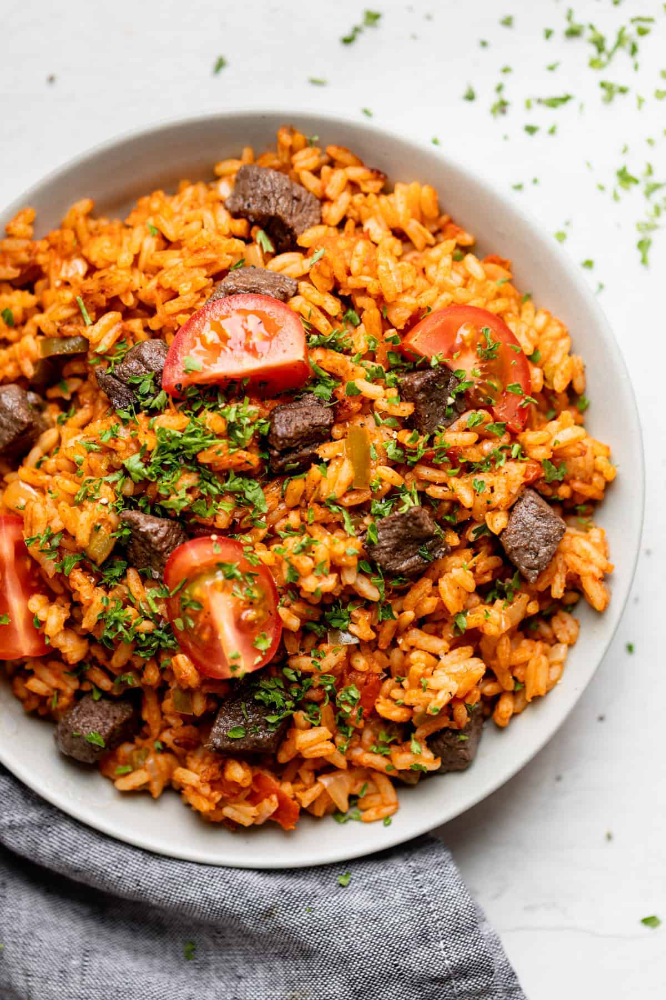

Ghana Jollof

Description
Jollof rice is one-pot rice dish that is very popular in West African countries like Sierra Leon, Nigeria and Ghana among others. While it varies between regions, the unifying theme is always rice, a spicy tomato stew and the seasoning made up of curry, thyme, ginger and chili pepper.
Ingredients
- 2 large yellow onion, roughly chopped
- ⅓ cup vegetable oil(80 mL), plus 2 tablespoons, divided.
- 14 oz diced tomato(395 g), 2 cans.
- 6 oz tomato paste(170 g), 1 can.
- 1 habanero pepper.
- 2 teaspoons curry powder.
- 1 teaspoon garlic powder.
- 1 teaspoon ground ginger.
- 0.5 teaspoon grounded ginger.
- 0.5 teaspoon mixed dried herbs.
- 3 chicken bouillon cubes, crushed.
- 2 and half cups long grain rice (500 g), rinsed.
- 1 cup frozen mixed vegetable (150 g).
- 1 and half cups of water (360 ml).
Preparation Steps
You'll find the full, step-by-step recipe below, but here's a brief overview of what you can expect when you make this tried-and-true Ghana Jollof Rice:
- Add onions and 2 tablespoons of oil to a blender and pulse until smooth. Transfer to a medium bowl.
- Add the diced tomatoes, tomato paste, and habanero pepper to the blender, and pulse until smooth. Transfer to a separate medium bowl.
- Heat the remaining ⅓ cup (80 ml) of oil in a large, heavy-bottomed pot over medium heat.
- Once the oil is shimmering, add the onion puree and cook until the water has cooked out and the puree is starting to brown, about 10 minutes.
- Stir in the tomato puree and add the curry powder, garlic powder, ginger, dried herbs, and crushed bouillon cubes. Cook for 20-30 minutes, stirring occasionally, until the stew has reduced by half and is deep red in color.
- Add the rice, mixed vegetables, and water. Bring to a boil, then reduce the heat to low and cover the pot with foil and a lid. Simmer for another 30 minutes, until the rice is cooked through and the liquid is absorbed.
- Enjoy